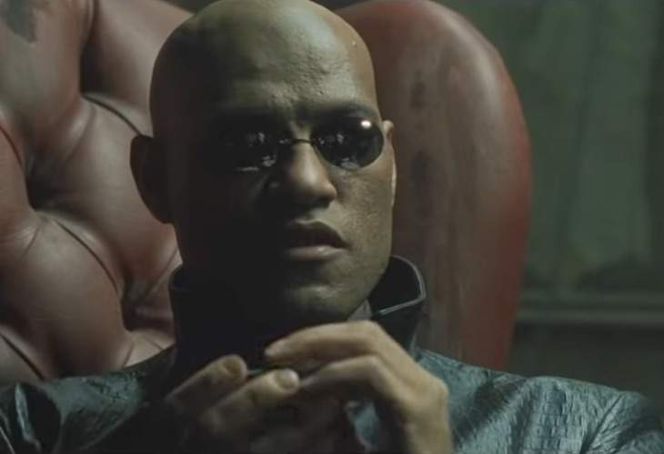
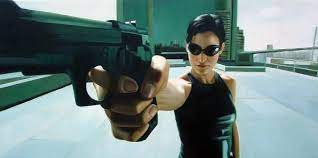
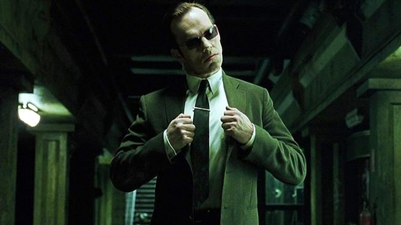
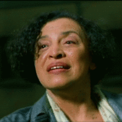

Personajes
Neo
Interpretado por Keanu Reeves es el personaje principal de la película, su verdadero nombre es Thomas A. Anderson y es un conocido rpogramador, además de ser un influyente hacker que ha cometido la gran mayoría de crímenes informáticos que existe, conocerá la realidad después de recibir en su ordenador numerosos mensajes de un extraño que lo sacarán de matrix

Morfeo
Interpretado por Laurence Fishburne al igual que Neo es un famoso hacker, sin embargo el es consciente del funcionamiento de matrix y de lo que los agentes de la misma planean hacerle a Neo, por lo que es el encargado de mandar a Trinity para que lo convenza de permitirse guiar
Trinity
Interpretada por Carrie-Anne Moss representa junto con el protagonista y Neo el núcleo de la resistencia contra las máquinas, es la enviada a despertar inicialmente a Neo de la Matrix, también era una las mayores hackers conocidas dentro del mundo de matrix, además des ser el futuro interés romántico de Neo
Agente Smith
Interpretado por Hugo Weaving es el principal antagonista de la película, representa un agente de Matrix creado para dar caza a todos los pertenecientes a la resistencia, en especial a Morfeo al ser el lider de esta
El oráculo
Una figura extraña creada por El arquitecto, no se sabe demasiado sobre ella salvo que sirve de guía a los humanos reveldes, y que cuenta con un enorme poder premoniotiro en el mundo de Matrix
